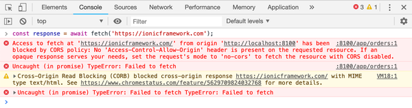
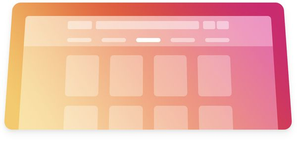
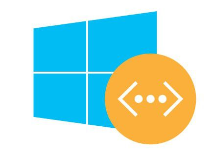

 Ionic CORS Errors in Ionic Apps CORS errors are common in web apps when a cross-origin request is made but the server doesn't return the required headers in the response. Learn how to fix them in this article.
Web How I Host this Static Ghost Blog on Github Pages with wget Generating a static site from a local Ghost blog with wget instead of Buster and hosting it at GitHub Pages.
 Ionic Tips & Tricks for Ionic on Desktop In the process of customizing Savelist for larger screens, we collected some tips & tricks that we wanted to share that could help you adapt your app for the desktop, without compromising the mobile experience we already had.
Angular Injecting Providers into Async Custom Validators in Angular One of the first things developers do when we are building a new app is a signup form, that checks that every field is okay and shows an appropriate error message if it’s not.
 Azure How To Connect Virtual Networks through a VPN in the New Azure Portal (Resource Manager) This article covers a very common use case for startups using Microsoft Azure and BizSpark: how to connect virtual machines from two virtual networks in different subscriptions (or regions) with the new Azure Portal (Resource Manager or ARM).